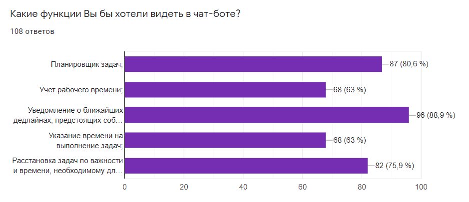

Этапы работы
Сбор статистических данных и их анализ
На данном этапе проведена работа по сбору статистике о посещаемости студентов и о зависимости оценок студентов от посещения занятий и их практической деятельности.
На основе полученных данных был сделан вывод, что главными составляющими являются задания и практика, которые необходимо выполнить студентам в процессе обучения. Однако не всегда можно сделать задание без объяснения преподавателя. Подробные объяснения и подходы к решению различных задач в основном обсуждаются на парах, поэтому их посещение будет являться залогом успеха для выполнения заданий студентами. Соответственно необходимо выявить проблемы, которые влияют на успеваемость и посещаемость студента. Были сформулированы несколько возможных гипотез плохой успеваемости студентов.
Формирование гипотез о причинах неуспеваемости и их проверка
На данном этапе были сформулированы основные гипотезы и была проведена проверка этих гипотез.
Разработка чат-бота
Проведение опроса среди студентов позволило узнать, какие функции хотят видеть пользователи в чат-боте.
Из результатов опроса видно, что «Планировщик задач», «Уведомление о ближайших дедлайнах» и «Расстановка задач и времени, необходимому для выполнения» являются наиболее интересными функциями для пользователей.
Проектирование и разработка
На данном этапе был разработан чат-бот на языке программирования PYTHON с интегрированием системы MOODLE.ORG. Но перед этим была составлена USE CASE - диаграмма, и спроектирована база данных.